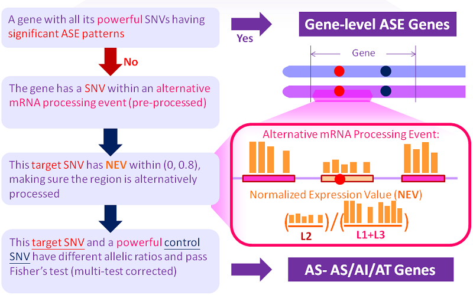

NAME
asarp.pl -- The new and improved ASARP pipeline to discover ASE/ASARP genes/SNVs, which now supports strand-specific RNA-Seq data.
For details of the older version, refer to the paper: Li G, Bahn JH, Lee JH, Peng G, Chen Z, Nelson SF, Xiao X. Identification of allele-specific alternative mRNA processing via transcriptome sequencing, Nucleic Acids Research, 2012, 40(13), e104 and its Supplementary Materials. Link: nar.oxfordjournals.org

SYNOPSIS
perl asarp.pl output_file config_file [optional: parameter_file]
NEW: the ASARP pipeline now supports strand-specific RNA-Seq data (which can be processed by the new pre-processing script: procReads. One can set the optional strand-specific flag in the cnofig file. IMPORTANT: the strand-specific option does not work correctly on non-strand-specific data.
ARGUMENTS:
config_file the input configuration file which contains all the input file keys and their paths
OPTIONAL:
parameter_file the parameter configuration file which contains all the thresholds and cutoffs if not input, the default.param file in the ASARP main program directory will be used
Details of the input config and parameter files can be found in the Files page. For preparation of the input files used in config_file, see the pre-processing section: rmDup, mergeSam, procReads
OUTPUTS
output_file is where the ASARP result summary is output, and meanwhile there will be 4 addtional detailed result files output:
output_file.ase.prediction-- the detailed results of (whole-gene-level) ASE patterns (exclusive to other ASARP patterns: AI, AS or AT)output_file.gene.prediction-- the detailed results of ASARP results (ASE patterns excluded) arranged by genesoutput_file.snv.prediction-- the detailed results of ASARP results (ASE patterns excluded) of each individual SNVoutput_file.controlSNV.prediction-- the control SNV information of each individual ASARP SNV
-I USAGE
Because asarp.pl requires other perl files in the same folder to run, -I path can be used if one would like to run ASARP elsewhere by adding its path.
perl -I path path/asarp.pl output_file config_file parameter_file
Note that in such a case, one should be careful of the locations of the config and parameter files. Abosulute paths are suggested for the files in config_file.
DESCRIPTION
The ASARP method is presented below:
OVERVIEW
The procedures (rules) for ASARP are illustrated in the following figure and terminology explained below:

There are basically 3 steps.
1. parse the input files and compile alternative mRNA processing events. see outputs of procReads
2. get the SNVs and match them with the events.
3. process ASARP (including ASE) patterns and output the formatted results.
TERMINOLOGY
The predictions that ASARP makes are desribed below:
Allele-Specific Expression (ASE)
- ASE: a single SNV is called to have an ASE pattern (or simply ASE SNV) if its allelic ratio significally diverges from 0.5 (in other words 1:1 for Ref:Alt).
Allele-Specific Alternative RNA Processing (ASARP) types:
- ASAS: Allele-Specific Alternative Splicing;
- ASAI: Allele-Specific Alternative (5'-end) Initiation;
- ASAT: Allele-Specific Alternative (3'-end) Termination, or Alternative Polyadenylation
How to categorize ASARP patterns into specific Allele-Specific AI/AS/AT and/or combinations of them depends on whether the candidate SNV locations are in internal exons/introns (AS) and/or alternative 3' or 5' UTRs (AI/AT). A complex ASARP gene is with ASARP SNVs in more than one categories.

NEV: Normalized Expression Value, a PSI (Percent Spliced-In) like value to measure whether an event (also alternatively processed region) is also alternatively processed according to RNA-Seq (gene expression). It is calculated as (note that in some events only NEV_gene is available)
NEV_sp = min (NEV_flanking, NEV_gene), whereNEV_flanking = (# event_reads/event_length)/(# flanking_region_total_reads/flanking_region_total_length), andNEV_gene = (# event_reads/event_length)/(# gene_constitutive_exon_reads/gene_constitutive_exon_length)
*_length means the total number of positions within the * region with non-zero reads.

REQUIREMENT
Statistics::R: has to be installed. See search.cpan.org
SEE ALSO
Overview, fileParser, snpParser, MyConstants
COPYRIGHT
This pipeline is free software; you can redistribute it and/or modify it given that the related works and authors are cited and acknowledged.
This program is distributed in the hope that it will be useful, but without any warranty; without even the implied warranty of merchantability or fitness for a particular purpose.
AUTHOR
Cyrus Tak-Ming CHAN
Xiao Lab, Department of Integrative Biology & Physiology, UCLA